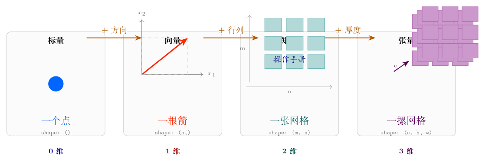

数学和编程里每一片数据都有"形状"——就像积木有不同大小。这节课认识四种最基本的形状。每种形状我们先在脑子里建一个画面，再用代码看一眼。

▲ 四级台阶：每升一级，多一个维度
温度 25°C、考试分数 92、银行余额 384.50——这些都是标量：一个数，没有方向，没有形状。
在 Python 里怎么写？
import numpy as np # numpy: Python 做数学运算的核心库，先把它加载进来
s = np.array(3.14) # np.array() 把 Python 的普通数字包成 numpy 的"数组"格式
# 3.14 是个 Python float，包一层后变成 numpy 标量
print(s) # 输出: 3.14 ——就是那个数本身
print(s.shape) # 输出: () ——空括号 = 零维，没有行也没有列
# .shape 是 numpy 数组自带的属性，告诉你"这个数组长什么样"标量虽然简单，但实际应用里很少单独用。你怎么同时管几千个数？答案在下面。
画面： 想象你在黑板上画了一根从原点出发的箭，箭头落在 $(x, y)$ 的位置。这根箭就是向量 $[x, y]$。
如果箭头落在 $(3, 4)$：
向量就是一排数——但不能只当一排数看。它背后是一根有长度、有方向的箭，这种直觉是后面所有线性代数的基础。
v = np.array([85, 92, 78]) # 方括号 [] 把三个数包起来，这就是一个向量
# numpy 自动识别：一维数组 = 向量
print(v) # 输出: [85 92 78]
print(v.shape) # 输出: (3,) ——逗号表示"这是一维"
# (3,) 和 (1,3) 不同：(3,) 是一维向量，(1,3) 是只有一行的二维矩阵
print(v[1]) # 输出: 92 ——索引从 0 开始：v[0]=85, v[1]=92, v[2]=78向量就是"一张表"——你有一个学生三门课的成绩表，装在这个向量里。每个位置固定代表一门课：第 0 位是语文，第 1 位是数学，第 2 位是英语。
[85, 92, 78] 这根箭可以装在两种容器里：
| rank-1 向量 | rank-2 列矩阵 | |
|---|---|---|
| 代码 | np.array([85,92,78]) | np.array([[85],[92],[78]]) |
| shape | (3,) — 一个数 | (3,1) — 两个数 |
| 画面 | 一根 3D 空间的箭 | 同一根箭，但装在表格里 |
rank = shape 里有几个数。 () 是 rank-0（标量），(3,) 是 rank-1（向量），(3,1) 是 rank-2（矩阵）。
关键区别： rank-1 向量的 .T（转置）不生效——它没有"行"和"列"的概念，转置还是自己。为什么？ .T 的本质是「交换轴 0 和轴 1」——但 rank-1 只有轴 0，没有轴 1。没东西可交换，所以 .T 什么都不做。rank-2 列矩阵有两个轴（行和列），转置会交换它们：(3,1) → (1,3)。
a = np.array([1, 2, 3]) # rank-1: (3,)
b = np.array([[1],[2],[3]]) # rank-2: (3,1)
print(a.T) # 输出: [1 2 3] ——没变！rank-1 没有转置概念
print(b.T) # 输出: [[1 2 3]] ——从 (3,1) 变成了 (1,3)箭的分量一样（都是 1,2,3），但容器的 rank 不同，numpy 对待它们的方式就不一样。这个概念后面学广播和矩阵乘法时会反复出现。
画面： 你有一块橡皮泥，捏成箭头的样子。你想把它扭一下、拉一下，变成另一个形状。你需要一个"操作手册"告诉机器：旧箭头的每个分量怎么搅和到一起产生新箭头的分量。
矩阵就是这本操作手册。 （注意：矩阵不总是操作手册——比如协方差矩阵就是数据关系表，不是操作。但在深度学习中，权重矩阵、投影矩阵确实都是对数据做变换的，用「操作手册」来理解它们特别合适。）
比如你想把箭头 $[1, 2]$ 变成 $[4, 6]$，用这个矩阵：
$$\mathbf{W} = \begin{bmatrix} 2 & 1 \\ 0 & 3 \end{bmatrix}$$把它"作用"到箭头上——矩阵乘向量：
$$\mathbf{y} = \mathbf{W}\mathbf{x} = \begin{bmatrix} 2 & 1 \\ 0 & 3 \end{bmatrix} \begin{bmatrix} 1 \\ 2 \end{bmatrix} = \begin{bmatrix} 2\times 1 + 1\times 2 \\ 0\times 1 + 3\times 2 \end{bmatrix} = \begin{bmatrix} 4 \\ 6 \end{bmatrix}$$怎么算的？第 1 个分量 = W 第 1 行 [2,1] 和 x [1,2]「对应位置相乘再求和」→ 2×1+1×2=4。第 2 个分量同理。这个操作叫点乘（下一课详讲），这里先记住「行 × 列 = 一个数」就行。
箭头被扭了。 原来指 $(1,2)$，现在指 $(4,6)$。
形状的铁律：
W = np.array([[2, 1], # 两层方括号：外层包住所有行，内层各包一行
[0, 3]]) # 形状 (2, 2)：2 行 2 列
x = np.array([1, 2]) # 向量，形状 (2,)
# @ 是 Python 里的矩阵乘法运算符（Python 3.5+）
y = W @ x # 矩阵乘向量：W(2,2) 把 x(2,) 扭成 y(2,)
print(y) # 输出: [4 6] ——箭头从 (1,2) 扭到了 (4,6)画面： 标量是一个点、向量是一根棍、矩阵是一张纸。那比纸更厚的呢？一摞纸——这就是三维张量。
一张 224×224 像素的彩色照片怎么存？它不是一张纸——它是三张纸摞在一起：一张红色通道、一张绿色通道、一张蓝色通道。每一张都是 224×224。合在一起，形状是 (3, 224, 224)。
如果你一次处理 32 张照片（这是常见做法，一次处理一批比一张张处理快得多），那就是四维：(32, 3, 224, 224)。第 0 维 = 一批有几张，第 1 维 = 颜色通道，第 2、3 维 = 图片的高和宽。
# np.ones(形状) 创建全 1 数组
T = np.ones((2, 3, 4)) # (2摞, 每摞3行, 每行4列)
print(T.shape) # 输出: (2, 3, 4) ——三维
print(T.size) # 输出: 24 ——总共有 2×3×4=24 个数字在里面| 名字 | 画面 | shape | 例子 |
|---|---|---|---|
| 标量 | 一个点 | () | 温度 25°C |
| 向量 | 一根箭 | (n,) | 三门成绩 [85,92,78] |
| 矩阵 | 一张纸（操作手册） | (m, n) | 扭箭头的规则 |
| 张量 | 一摞纸 | (b,c,h,w) | 一批彩色照片 |
np.array([1,2,3]) 的 shape 是 (3,)，而 np.array([[1],[2],[3]]) 的 shape 是 (3,1)。用箭头画面解释：这两种形状在几何上有什么区别？——考察：一维向量 vs 二维单列矩阵